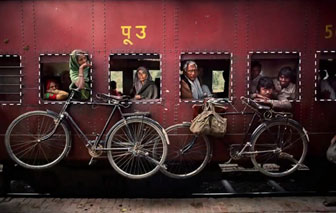
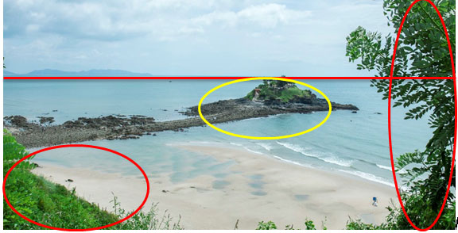
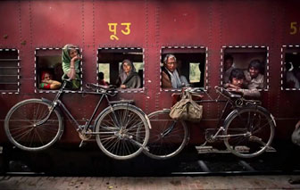
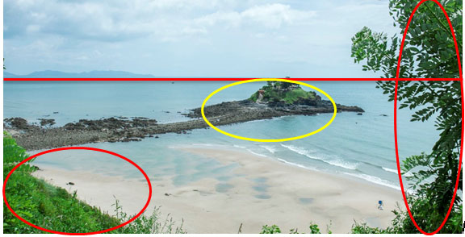

Bố cục là sự bố trí, sắp xếp những yếu tố tạo hình trên một cục diện, không gian nhất định nào đó. Những ý thức về bố cục đã được hình thành từ thời tiền sử. Văn minh Hy Lạp cổ đại đi đầu trong việc nguyên tắc hoá bố cục. Trong các thời kỳ phát triển của mỹ thuật, bố cục luôn được coi trọng, đôi khi trở thành kinh điển, giáo điều. Ngày nay, bố cục được nhìn cởi mở hơn, quan niệm về “khuôn vàng thước ngọc” không còn tồn tại một cách cứng nhắc và bố cục bây giờ là sự hài hoà, hợp nhãn, đôi khi còn là sự “phá phách”, phục vụ cho ý tưởng sáng tạo của tác giả.
Trong nhiếp ảnh thường có 3 thể loại bố cục đặc trưng, đó là Bố cục ảnh, Bố cục màu sắc, và Bố cục ánh sáng. Vì ở đây chỉ giới hạn về kiến thức cơ bản nên do đó chỉ mô tả về những Bố cục ảnh căn bản nhất, thông dụng nhất và các quy tắc của nó.
Trong bố cục ảnh cơ bản thì được phân ra thành 5 dạng chính, ở đây chỉ nói đến bố cục chung chung chứ không chú trọng một thể loại ảnh nào khác:
1. Bố cục 1/3: Có lẽ chúng ta nên xem quy tắc Một Phần Ba như là chọn lựa mặc định về sắp xếp bố cục đối với hầu hết những người chụp ảnh, là nguyên tắc phổ biến nhất. Cơ bản, trong quá trình sắp xếp bố cục một bức ảnh, nó đòi hỏi khung hình phải được chia làm chín hình chữ nhật bằng nhau bởi bốn đường thẳng cắt nhau, trong đó hai đường cắt khung ảnh thành ba phần theo hàng ngang, hai đường còn lại cắt thành ba phần theo hàng dọc. Một khung hình phổ biến sẽ được phân chia như sau:
* Dãy Fibonacci
Quy tắc Một Phần Ba xuất phát từ tỉ lệ vàng nổi tiếng, vốn là một cách sắp xếp bố cục và nguyên tắc tỉ lệ dựa trên dãy số Fibonacci (trong đó một con số được xác định bằng cách cộng hai con số đứng trước nó). Các bạn có thể tìm hiểu Dãy Fibonacci ở Wikipedia. Quy tắc này "tỉ lệ vàng", một tỉ lệ của cái đẹp. Một sự thống nhất hài hòa giữa khoa học và nghệ thuật. Rất nhiều nhà nghệ thuật thời phục hưng như Da vinci hay Angelo... đều lấy nó làm tỉ lệ chuẩn trong các tác phẩm của mình. Họ gọi nó là "tỉ lệ thần thánh". Nếu bạn có tỉ lệ của 2 đại lượng nào đó là con số xấp xỉ 1,6180... thì người ta gọi đó chính là "tỉ lệ vàng", chính vì khi lấy số đứng sau chia cho số đứng trước trong dãy Fibonacci, chúng ta được một con số xấp xỉ tỉ lệ vàng này.
Và, nếu bạn quá ngạc nhiên khi thấy nghệ thuật và toán học có điều gì đó chung, thì hãy thôi đi – tỉ lệ vàng đã từng được biết đến cách đây hơn nghìn năm. Dù gì đi nữa, tỉ lệ vàng là một tỉ lệ mà người ta thấy hết sức bắt mắt và tự nhiên. Cơ bản nó được cân nhắc để xác định sự cân đối, và cũng được tìm thấy không chỉ trong các đối tượng nghệ thuật, mà ngay cả trong thiên nhiên và được ứng dụng trong kiến trúc, hội hoạ, và mãi sau này mới ứng dụng trong nhiếp ảnh.
Từng có nhiều bạn phản ứng rằng người ta tạo nên một tác phẩm, hội hoạ hay kiến trúc hoặc bức ảnh một cách vô thức ngẫu nhiên, sau đó đám hậu sinh ngồi phân tích rằng những tác phẩm ấy là tuyệt tác vì được tạo nên dựa theo nguyên tắc này nguyên tắc nọ tự nghĩ ra. Kỳ thực là các nguyên lý ấy tiềm ẩn trong thiên nhiên vạn vật từ thuở nguyên thuỷ rồi. Con người dần khám phá mà thôi.
Những quy tắc ấy chẳng do người nào đặt ra làm tiêu chuẩn cả. Tự thân chúng ẩn náu trong tận tiềm thức về cái đẹp nơi con người, và phải nói người chụp ảnh là người đi tìm, gặp gỡ và lưu giữ cái đẹp. Chính một bức ảnh đẹp cho thấy những nguyên tắc trong đó. Và, một trong những quy tắc đầu tiên cho người bắt đầu cầm máy đó là nguyên tắc về bố cục, tỷ lệ vàng.
2. Bố cục đối xứng: Là dạng bố cục ảnh có những đối tượng chụp đối xứng với nhau, hai bên, hoặc trên dưới hoặc cả bốn góc, hoặc tất cả các đối tượng đối xứng với nhau.
3. Bố cục Khung trong khung: Là bố cục ảnh lồng các đối tượng vào trong 1 khung hoặc một ô nào đó trong khung hình.


4. Bố cục đường dẫn: Là dạng bố cục sử dụng những đường nét song song, thẳng hàng hoặc cong, hoặc những đường dẫn từ môi trường hoàn cảnh chụp để làm nổi bật chủ thể muốn thể hiện trên ảnh:
5. Bố cục tạo điểm nhấn: Là loại bố cục tạo sử dụng những điểm hoặc chủ thể khác trùng lặp nhau để tạo nên điểm nhấn là chủ thể, làm nổi bật đối tượng muốn thể hiện
Ngoài ra còn một số quy tắc bố cục cần phải nắm rõ:
a. Quy tắc đường chân trời trong chụp phong cảnh: Thông thường khi chụp phong cảnh thì đường chân trời luôn nằm trên hoặc dưới 1/3 khung hình (trong trường hợp này không nói đến bố cục đối xứng trong phong cảnh thì đường chân trời có thể nằm ở giữa khung hình)
b. Quy tắc các đường chéo, đường cong: Sử dụng các đường chéo, đường cong vắt ngang qua khung hình:
c. Quy tắc hướng nhìn trong chân dung: Quy tắc này hướng hướng nhìn của mẫu sang một không gian thoáng trong khung hình tạo nên cảm giác dễ chịu cho người xem
Nếu hướng nhìn sai sẽ gây cảm giác bức bí khó chịu cho người xem, như tấm dưới đây:
Quy tắc con mắt ấn tượng trong chân dung: Quy tắc này đặt con mắt của chủ thể vào giữa khung hình để làm nổi bật chủ thể.
Hay những bố cục khác như Vùng mạnh, vùng tựa như hình sau:

Trong bố cục ảnh cơ bản thì được phân ra thành 5 dạng chính, ở đây chỉ nói đến bố cục chung chung chứ không chú trọng một thể loại ảnh nào khác:
1. Bố cục 1/3: Có lẽ chúng ta nên xem quy tắc Một Phần Ba như là chọn lựa mặc định về sắp xếp bố cục đối với hầu hết những người chụp ảnh, là nguyên tắc phổ biến nhất. Cơ bản, trong quá trình sắp xếp bố cục một bức ảnh, nó đòi hỏi khung hình phải được chia làm chín hình chữ nhật bằng nhau bởi bốn đường thẳng cắt nhau, trong đó hai đường cắt khung ảnh thành ba phần theo hàng ngang, hai đường còn lại cắt thành ba phần theo hàng dọc. Một khung hình phổ biến sẽ được phân chia như sau:
(Ảnh chân dung với bố cục 1/3)
* Dãy Fibonacci
Quy tắc Một Phần Ba xuất phát từ tỉ lệ vàng nổi tiếng, vốn là một cách sắp xếp bố cục và nguyên tắc tỉ lệ dựa trên dãy số Fibonacci (trong đó một con số được xác định bằng cách cộng hai con số đứng trước nó). Các bạn có thể tìm hiểu Dãy Fibonacci ở Wikipedia. Quy tắc này "tỉ lệ vàng", một tỉ lệ của cái đẹp. Một sự thống nhất hài hòa giữa khoa học và nghệ thuật. Rất nhiều nhà nghệ thuật thời phục hưng như Da vinci hay Angelo... đều lấy nó làm tỉ lệ chuẩn trong các tác phẩm của mình. Họ gọi nó là "tỉ lệ thần thánh". Nếu bạn có tỉ lệ của 2 đại lượng nào đó là con số xấp xỉ 1,6180... thì người ta gọi đó chính là "tỉ lệ vàng", chính vì khi lấy số đứng sau chia cho số đứng trước trong dãy Fibonacci, chúng ta được một con số xấp xỉ tỉ lệ vàng này.
Và, nếu bạn quá ngạc nhiên khi thấy nghệ thuật và toán học có điều gì đó chung, thì hãy thôi đi – tỉ lệ vàng đã từng được biết đến cách đây hơn nghìn năm. Dù gì đi nữa, tỉ lệ vàng là một tỉ lệ mà người ta thấy hết sức bắt mắt và tự nhiên. Cơ bản nó được cân nhắc để xác định sự cân đối, và cũng được tìm thấy không chỉ trong các đối tượng nghệ thuật, mà ngay cả trong thiên nhiên và được ứng dụng trong kiến trúc, hội hoạ, và mãi sau này mới ứng dụng trong nhiếp ảnh.
Từng có nhiều bạn phản ứng rằng người ta tạo nên một tác phẩm, hội hoạ hay kiến trúc hoặc bức ảnh một cách vô thức ngẫu nhiên, sau đó đám hậu sinh ngồi phân tích rằng những tác phẩm ấy là tuyệt tác vì được tạo nên dựa theo nguyên tắc này nguyên tắc nọ tự nghĩ ra. Kỳ thực là các nguyên lý ấy tiềm ẩn trong thiên nhiên vạn vật từ thuở nguyên thuỷ rồi. Con người dần khám phá mà thôi.
Những quy tắc ấy chẳng do người nào đặt ra làm tiêu chuẩn cả. Tự thân chúng ẩn náu trong tận tiềm thức về cái đẹp nơi con người, và phải nói người chụp ảnh là người đi tìm, gặp gỡ và lưu giữ cái đẹp. Chính một bức ảnh đẹp cho thấy những nguyên tắc trong đó. Và, một trong những quy tắc đầu tiên cho người bắt đầu cầm máy đó là nguyên tắc về bố cục, tỷ lệ vàng.
2. Bố cục đối xứng: Là dạng bố cục ảnh có những đối tượng chụp đối xứng với nhau, hai bên, hoặc trên dưới hoặc cả bốn góc, hoặc tất cả các đối tượng đối xứng với nhau.
3. Bố cục Khung trong khung: Là bố cục ảnh lồng các đối tượng vào trong 1 khung hoặc một ô nào đó trong khung hình.

4. Bố cục đường dẫn: Là dạng bố cục sử dụng những đường nét song song, thẳng hàng hoặc cong, hoặc những đường dẫn từ môi trường hoàn cảnh chụp để làm nổi bật chủ thể muốn thể hiện trên ảnh:
5. Bố cục tạo điểm nhấn: Là loại bố cục tạo sử dụng những điểm hoặc chủ thể khác trùng lặp nhau để tạo nên điểm nhấn là chủ thể, làm nổi bật đối tượng muốn thể hiện
Ngoài ra còn một số quy tắc bố cục cần phải nắm rõ:
a. Quy tắc đường chân trời trong chụp phong cảnh: Thông thường khi chụp phong cảnh thì đường chân trời luôn nằm trên hoặc dưới 1/3 khung hình (trong trường hợp này không nói đến bố cục đối xứng trong phong cảnh thì đường chân trời có thể nằm ở giữa khung hình)
b. Quy tắc các đường chéo, đường cong: Sử dụng các đường chéo, đường cong vắt ngang qua khung hình:
c. Quy tắc hướng nhìn trong chân dung: Quy tắc này hướng hướng nhìn của mẫu sang một không gian thoáng trong khung hình tạo nên cảm giác dễ chịu cho người xem
Nếu hướng nhìn sai sẽ gây cảm giác bức bí khó chịu cho người xem, như tấm dưới đây:
Quy tắc con mắt ấn tượng trong chân dung: Quy tắc này đặt con mắt của chủ thể vào giữa khung hình để làm nổi bật chủ thể.
Hay những bố cục khác như Vùng mạnh, vùng tựa như hình sau:
(1 vùng mạnh, 1 đường mạnh)
(1 đường mạnh, 1 điểm mạnh, 1 vùng mạnh)
(1 đường mạnh, 1 vùng mạnh, 1 điểm tựa)

(1 vùng mạnh, 1 đường mạnh, 2 điểm tựa)
Tất cả các bố cục chỉ là những quy tắc được tổng hợp từ ngày xưa, theo 1 quy chuẩn nào đó trong tiềm thức con người thấy là đẹp. Thực chất cái đẹp là trừu tượng, không ai giống ai, bạn thấy đẹp, người khác thấy không đẹp hay ngược lại âu cũng là chuyện bình thường. Do đó một số nhiếp ảnh gia đã phá cách và tạo ra những bức ảnh không theo bố cục thông thường nhưng vẫn rất đẹp (cũng có thể vì người ta nổi tiếng mà ảnh họ tự nhiên đẹp). Vì vậy theo những người nổi tiếng đó thì Bố cục đẹp nhất là không có bố cục gì cả! Cảm nhận cái đẹp theo từng suy nghĩ riêng của mỗi người! Chúc các bạn tạo được những bức ảnh đẹp (ít ra là các bạn thấy đẹp).
Tất cả các hình ảnh và thông tin được tổng hợp từ kinh nghiệm chụp ảnh và sử dụng thiết bị của tác giả biên soạn và trên rất nhiều nguồn trên internet. Website nguồn được ghi trong mục Giới thiệu về ứng dụng.